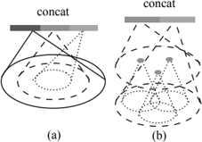
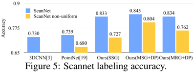
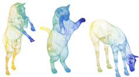
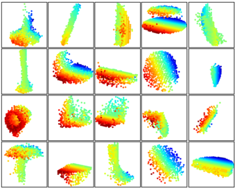
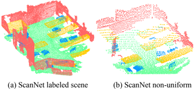

Autores: Charles R. Qi, Li Yi, Hao Su, Leonidas J. Guibas (Stanford, NeurIPS 2017)
arXiv: 1706.02413
Idea central
Sucesor directo de [[PointNet_Qi_2017]]. Resuelve la limitación clave de PointNet: no capturaba estructura local. PointNet++ aplica PointNet recursivamente sobre particiones anidadas de la nube de puntos, imitando el receptivo jerárquico de una CNN.
Bloques principales
Set Abstraction Layer (×N)
Cada nivel jerárquico hace tres cosas:
- Sampling layer — selecciona M centroides con Farthest Point Sampling (FPS).
- Grouping layer — agrupa los k vecinos (o vecinos dentro de un radio) alrededor de cada centroide.
- PointNet layer — aplica un mini-PointNet a cada grupo → feature local.
Apilar varias capas produce features cada vez más globales (igual que conv stacks en imágenes).
Multi-Scale Grouping (MSG) / Multi-Resolution Grouping (MRG)
Para lidiar con densidades no uniformes (escaneos reales), agrupa a múltiples radios y combina con pesos aprendibles + dropout aleatorio de puntos durante el entrenamiento.
Feature Propagation (para segmentación)
Up-sampling con interpolación inversa por distancia + skip connections → predicción por punto.
Resultados
- ModelNet40: ~91.9% (mejor que PointNet).
- ScanNet (escenas reales con densidad variable): supera fuertemente a PointNet.
- MNIST-2D: prueba de concepto.
Aportes
- Jerarquía local-global sobre point clouds (analogo a receptive fields crecientes en CNNs).
- Robustez a densidades no uniformes vía MSG/MRG.
- Plantilla que se repite en casi toda la literatura posterior (PointConv, KPConv, etc.).
Conexiones
- Sucesor de [[PointNet_Qi_2017]].
- Su esquema de muestreo + agrupamiento es la inspiración directa para [[DGCNN]] (que cambia el agrupamiento fijo por uno dinámico en feature space).
- Implementaciones modernas se encuentran en [[TorchPoints3D_framework]].
Figuras del Paper (9)

Figure 1: Visualization of a scan captured from a Structure Sensor (left: RGB; right: point cloud).
Figure 1: Visualization of a scan captured from a Structure Sensor (left: RGB; right: point cloud).

Figure 2: Illustration of our hierarchical feature learning architecture and its application for set segmentation and classification using points in 2D Euclidean space as an example. Single scale point grouping is visualized here. For details on density adaptive grouping, see Fig. 3
Figure 2: Illustration of our hierarchical feature learning architecture and its application for set segmentation and classification using points in 2D Euclidean space as an example. Single scale point grouping is visualized here. For details on density adaptive grouping, see Fig. 3

Sin caption
Figura en pagina 4.

Figure 4: Left: Point cloud with random point dropout. Right: Curve showing advantage of our density adaptive strategy in dealing with non-uniform density. DP means random input dropout during training; otherwise training is on uniformly dense points. See Sec.3.3 for details.
Figure 4: Left: Point cloud with random point dropout. Right: Curve showing advantage of our density adaptive strategy in dealing with non-uniform density. DP means random input dropout during training; otherwise training is on uniformly dense points. See Sec.3.3 for details.

Sin caption
Figura en pagina 6.

Wall Floor Chair Desk Bed Door Table Figure 6: Scannet labeling results. [20] captures the overall layout of the room correctly but fails to discover the furniture. Our approach, in contrast, is much better at segmenting objects besides the room layout.
Wall Floor Chair Desk Bed Door Table Figure 6: Scannet labeling results. [20] captures the overall layout of the room correctly but fails to discover the furniture. Our approach, in contrast, is much better at segmenting objects besides the room layout.

Figure 7: An example of nonrigid shape classification. (a) Horse (b) Cat (C) Horse
Figure 7: An example of nonrigid shape classification. (a) Horse (b) Cat (C) Horse

Figure 8: 3D point cloud patterns learned from the first layer kernels. The model is trained for ModelNet40 shape classification (20 out of the 128 kernels are randomly selected). Color indicates point depth (red is near, blue is far).
Figure 8: 3D point cloud patterns learned from the first layer kernels. The model is trained for ModelNet40 shape classification (20 out of the 128 kernels are randomly selected). Color indicates point depth (red is near, blue is far).

Figure 9: Virtual scan generated from ScanNet
Figure 9: Virtual scan generated from ScanNet